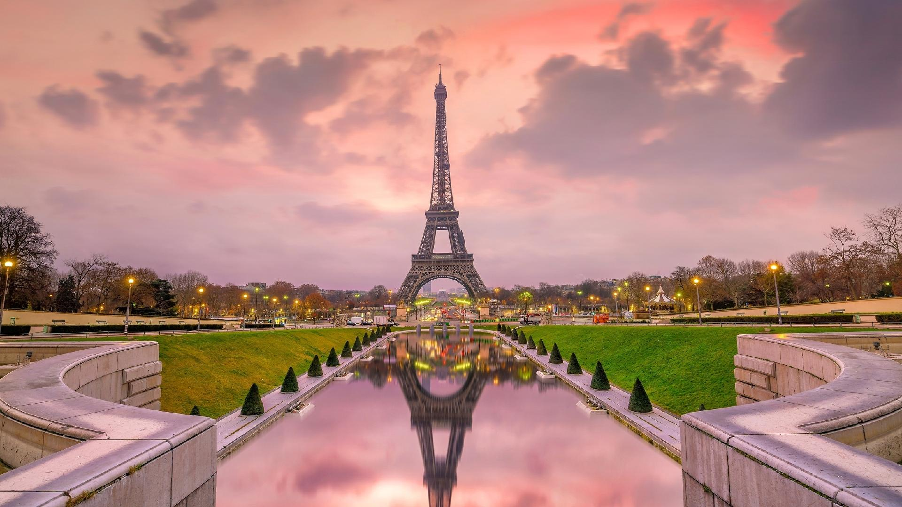
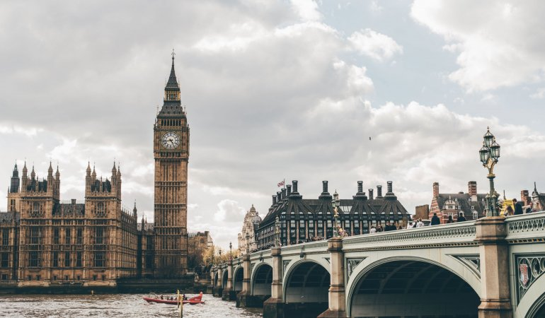
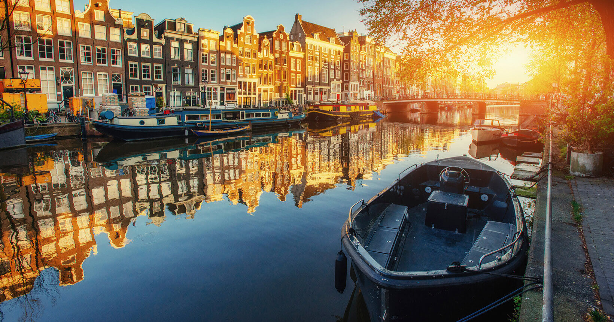
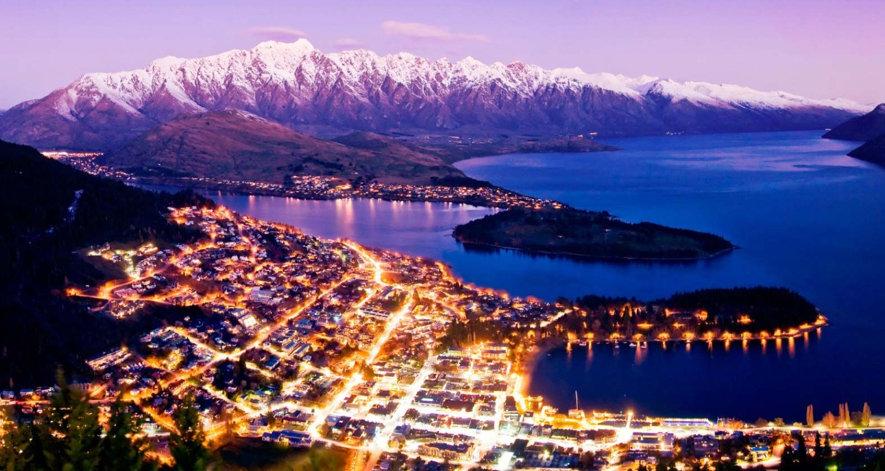

Top 5 lugares para você visitar
Conheça aqui os melhores destinos da sua viagem!
Paris | França
Paris sempre será Paris, um dos lugares que precisam ser conhecidos pelo menos uma vez na vida. A cidade das luzes nunca deixará de ser um dos melhores lugares para viajar no mundo!
Londres | Inglaterra
O ônibus vermelho de dois andares. O punk solitário em frente ao Picadilly Circus. Os estilosos táxis pretos. Londres – a mais importante cidade da Inglaterra e do Reino Unido.
Los Angeles | Califórnia

Berço da indústria cinematográfica, Los Angeles é a terra prometida de ecléticas revoadas de sonhadores e aventureiros, que aterrissam na metrópole para tentar a sorte!
Amsterdã | Holanda
Amsterdã - ou Amsterdam: uma cidade com uma atmosfera incrível, cheia de história, romântica e com opções de entretenimento que agradam pessoas de todas as idades.
Queenstown | Nova Zelândia
Em Queenstown é possível pular de um bungee jump de mais de 100 metros de altura, saltar de paraquedas, balançar como um pêndulo sobre um cânion e voar de paraglider num mesmo dia, se você quiser.